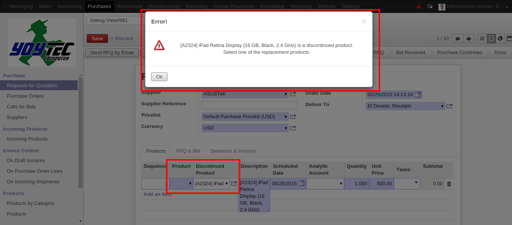
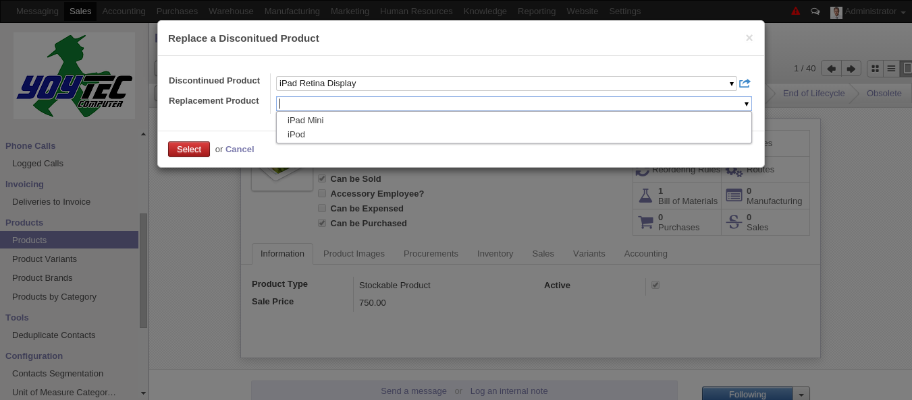

Product Lifecycle
This module apply a part of the product lifecycle management concept by
extending the logic of the field
Status
defined in the Odoo base modules
and by adding a replacement product fields that will be used as alternatives
in purchase operations when a product is discontinued.
Odoo manage a informative status field in the
Product Template
model. This
module hide this not used functionality and use a similar status field in the
Product Variant
model. This way we can identify the product lifecycle
state of a product and what are the replacement relations.
Installation
To install this module, you need to:
-
Not special pre-installation is required, just install as a regular odoo
module:
- Download this module from Vauxoo/addons-vauxoo
- Add the repository folder into your odoo addons-path.
-
Go to
Settings > Module listsearch for the current name and click inInstallbutton.
Configuration
To configure this module, you need to:
- There is not special configuration for this module.
Usage
Lifecycle Status
The status of the
Product Variant
is manage in the header of the product
form view as a clickeable statusbar widget and with default value
In
Development
.
The possible lifecyle states are:
-
In Development: An active product that can be sell or purchase. -
Normal: An active product that can be sell or purchase. -
End of Lifecycle: Means that the product is a discontinued product but there is still in stock. -
Obsolete: Means that the product is a discontinued product and have not stock.
Search filters were added to search and group by products by its lifecycle status. Just go to a
Product Variant
list view and filter.
Replacement Products
A new field section named
Replacement Info
was added to the
Product Variant
form view to hold the information about replacements products. This apply when the product is a
obsolete
product. There are new fields:
-
Replaced ByApply when the current product is an obsolete product, this field is the new product that will be replacement of the current product. -
Replace To: Apply when the current product is a new product, this field holds an obsolete product and indicate that the current product is the new replacement of the obsolete product.
This replacements relationships only apply over the purchase context. For automatic purchase, the obsolete product will not be purchased, instead its replacement product will be the one purchased.
Purchase Orders and Replacement Products
The user will be able to purchase the obsolete product, this module will show a warning message just informative indicating that the product is obsolete and showing the suggested replacement product so the user can decide if purchase the obsolete product or purchase its replacement product.

If a purchase order have lines with obsolete product you will see then in red.
If your order still in draft state then you can replace the purchase order
lines with its pre-configure replacement products. This can be performed through a new action named
Replace Obsolete Products
that you can activate doing a click over the button with the same name in the Purchase Order form view header.
This new action will filter and show you the purchase order lines with
obsolete products and will show you the replacement product that is extract
from the
Replaced By
field in the obsolete product configuration.
NOTE: If not replacement product is shown means that the obsolete product has not configure replacement product.
In another case, if you have several obsolete products in your purchase order
but some one of then you want to purchase it even if they are obsolete then
you just need to remove this line from the
Lines to Replace
section. This will not delete the purchase order line from the purchase order,
will only indicate that this line will not be replace with its replacement
product.
NOTE: If there is not purchase order lines with obsolete products and you try to run the replace obsolete products wizard you will found a User Error message indicating that there is not lines to be replaced.

If you decide to purchase an
Obsolete
product and the purchase is complete
(purchase order done and you receive the product) this will affect the product
state, will change form
Obsolete
to
End of Life
state. This states
change is a automatically action that runs every hour in the system. If, you
do not want to wait because there is something yo want to do with the product
you can go to the product form view and change the state manually.

Click on the video
Sale Order and Obsolete Products
This module add a filter so you can not sell an obsolete product. That means that discontinued with no stock product will not be selectable from the sale order lines.
Also, when you sale a
End of Life
product and finish the existence of the
product (stock inventory 0.0) the product state will be affected. The product
will change automatically from
End of Life
to
Obsolete
state. This is
an automatic action and is done every 1 hour in the system.
Product Edition Security
A new access rules over the
Products
and
Product Variants
records were
added. A product only can be edited by its product manager.
Known issues / Roadmap
Bug Tracker
Bugs are tracked on GitHub Issues . In case of trouble, please check there if your issue has already been reported. If you spotted it first, help us smashing it by providing a detailed and welcomed feedback here
TODO
- Create a unit test that check directly the method that is responsible from run the ir.cron
- Check what is the current problem using old/new api indicate in this module tests.
- Apply OCA standards to this module.
Credits
Contributors
- Katherine Zaoral < kathy@vauxoo.com > (Planer/Developer)
- Nhomar Hernandez < nhomar@vauxoo.com > (Planner/Auditor)